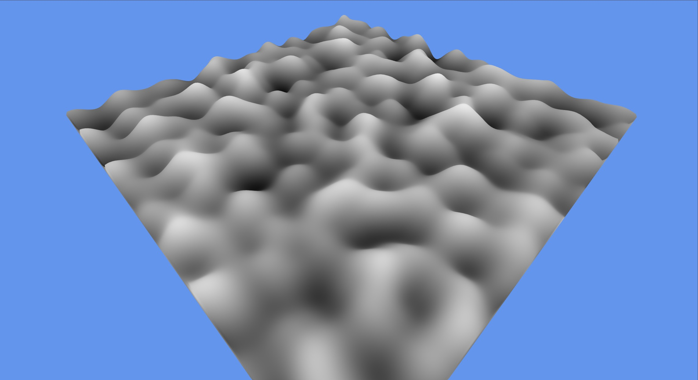

3D Graphics

This project implements GPU-based 3D Gradient (Perlin) Noise entirely in GLSL fragment shaders, building on the Value Noise assignment by moving noise generation from the CPU to the GPU. A procedural hash function generates pseudo-random gradient vectors at lattice points, which are dot-producted with distance vectors and interpolated using a quintic fade curve to produce smooth, continuous noise. The noise is rendered into an R32F framebuffer texture and can be viewed either as a 2D greyscale texture or as a 3D displaced surface with a fly-around spectator camera. Five pattern types are supported: plain Gradient, Fractal Sum (fBm), Turbulence, Marble, and Wood.
textureLod to displace mesh vertices, creating a 3D terrain
visualization from the generated noise data.Moving noise generation from the CPU to the GPU was a significant shift in thinking — instead of permutation tables and array lookups, everything had to be expressed as pure math functions in GLSL. The procedural hash approach trades the determinism of a permutation table for simplicity and GPU-friendliness. Tuning the noise frequency and amplitude to match the reference demo required understanding how the scale parameter, tiling scale, and surface model matrix all interact to determine the final visual density of the terrain. Seeing the same noise data drive both a flat texture preview and a fully navigable 3D surface made the connection between procedural textures and terrain generation very concrete.